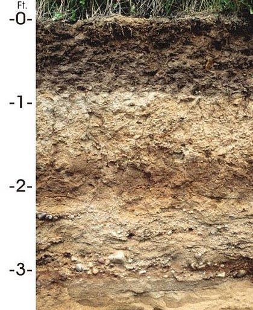
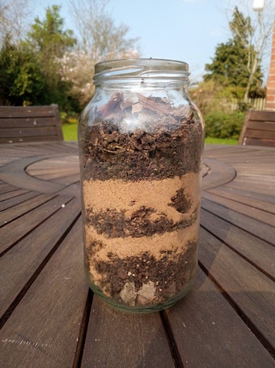

Soil

As all gardeners know, good soil is one of
the main secrets of growing good plants. Without soil, there
would be very few plants on land at all. So, what is soil made
of and where does it come from? A good way to start exploring
this is to dig a hole in the garden. Depending on the
location, there may be some organic material (dead leaves
etc) on the surface, then some good dark soil, but further
down you will encounter paler soil, most probably with a
mixture of stones in clay or sand, and if you dig far enough
you may hit solid rock. Soil is a mixture of mineral particles
weathered from rocks and organic material from decaying plant
material.
To see what your own soil is made of, take a large jar with a
wide mouth and a screw-on lid (this will also be useful for
the wormery project below) fill it about 1/3 of the way with
soil, including material from the surface down to depth of
6-12 inches, then top it most of the way up with warm water,
screw the lid on and give it a good shake. Leave it a few
hours to settle and you should find that you have several
different layers. At the bottom will be any stones or gravel
in the soil. Above this there may be a sand layer, then one or
more soil layers. Any fine clay will remain suspended for a
long time in the water, though fine clay particles should
gradually settle out on top of the soil. Finally, some organic
material may remain floating on the surface. The relative
thickness of these layers will give an idea of the composition
of your soil.
Worms make an important contribution to the health of the
soil. They feed by eating soil and extracting bits of dead
plant or animal material from it. In the process they mix up
the soil with their burrowing and enrich it with humus by
pulling leaves down into the soil. You can see this at work by
setting up a wormery, as shown in the picture on the right,
which is taken from this
Woodland Trust guide. What
you need is a transparent (glass or plastic) container with
vertical sides and a wide mouth. A large drinks bottle with
the top cut off will work if you don't have a suitable vase or
jar. Put some stones, gravel or sand in the bottom to provide
drainage, then fill the container with soil, incorporating a
few layers of sand. Place a few dead leaves on the
surface and then add a few worms and watch what happens over
the course of a few days. Your wormery needs to be kept in a
cool dark place. Worms will avoid the light, so if you
don't have a dark place then you should wrap dark paper round
the jar, which you can remove to inspect their tunnels. Return
your worms to the garden when you have finished watching them.
Many other creatures can be found in the surface layers of
soil. The richest collection can usually be found under trees,
where there is plenty of leaf litter. One way of discovering
what creatures live in this surface layer is to make a trap.
Sink a jar in the ground with its mouth level with the ground,
place a few leaves and twigs around the rim and then wait a
few hours to see what falls into your trap. A magnifying glass
will help you to study anything you catch, before returning it
to the leaf litter. A simple identification guide to some of
the most common "minibeasts", from the RSPB, can be found here.
Another method for studying creatures in the surface layers of
soil is to collect a few scoops in a carrier bag and tip it
little by little into a sieve on top of a white container.
Creatures which fall through can be studied. You may find a
small paintbrush useful for moving them gently around. You can
encourage more creatures to fall through the sieve by shining
a lamp onto the top of the material in it - creatures will
move away from the light. You can keep your minibeasts for a
few days if you provide them with a suitable home. What you
need is a container with a lid in which you can punch a few
holes. This should contain some damp soil with leaf litter and
perhaps a little decaying wood and a stone, and should be kept
out of bright light. You can then investigate which creatures
move around, which will hide under a stone, which burrow into
the soil, which seem to be interested in the decaying wood
etc.